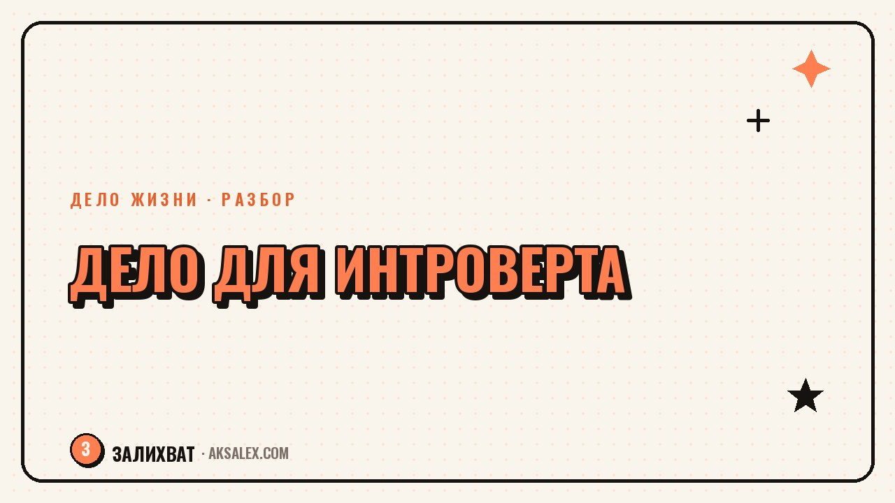

Как найти своё дело, если ты интроверт

Большая часть советов про 'найди своё дело' написана для людей, которым легко общаться с кем угодно и выступать перед залом. Если после пяти встреч подряд тебе хочется закрыть дверь и молчать два дня - это не недостаток, а особенность, с которой можно работать. Разберём, как интроверту искать своё дело с опорой на то, как ты устроен, а не вопреки этому.
Почему стандартные советы про своё дело не работают для интроверта
Большинство популярных форматов заработка построены вокруг постоянного контакта: сторис каждый день, нетворкинг, продающие звонки, выступления на камеру. Если ты интроверт, такие форматы расходуют энергию быстрее, чем ты успеваешь её восстанавливать. Через пару недель в таком режиме наступает не вдохновение, а истощение, и дело начинает казаться 'не своим', хотя причина в формате, а не в самой идее.
Стоит отличать интроверсию от застенчивости или социальной тревоги: интроверт может прекрасно общаться, вести переговоры и выступать, а после этого ему нужно время в одиночестве, чтобы восстановиться. Это особенность энергетического баланса, которую полезно учитывать при выборе формата дела, а не игнорировать до выгорания.
Дело подходит не тогда, когда ты можешь через него общаться, а тогда, когда общение в нём - осознанный выбор, а не постоянная необходимость.
Форматы работы, где общение - не главная ось
Есть целый пласт занятий, где результат важнее процесса общения: письмо, аналитика, разработка, иллюстрация, монтаж, бухгалтерия. В этих форматах контакт с людьми есть, но он сконцентрирован - обсуждение задачи в начале и сдача результата в конце, а между этим часы спокойной работы.
Примеры дел с низкой постоянной нагрузкой на общение
- Письменные форматы - копирайтинг, редактура, техническое письмо, блог без постоянных прямых эфиров
- Прикладные навыки - вёрстка, дизайн, монтаж видео, 3D-визуализация, иллюстрация
- Экспертные консультации по записи - один клиент за раз, с перерывом между встречами
- Работа руками с конечным результатом - реставрация, изготовление украшений, флористика, переплёт книг
Даже в этих форматах придётся иногда общаться - с клиентами, заказчиками, подрядчиками. Разница в дозировке контакта: ты сам решаешь, сколько встреч в день назначить, а не живёшь в режиме непрерывного открытого эфира.
Как вести соцсети и находить клиентов, если выступать на камеру не хочется
Отсутствие желания быть лицом блога не означает отсутствие возможности продвигаться. Письменный контент, карточки и разборы работают без камеры и прямых эфиров и находят свою аудиторию - тех, кто сам предпочитает читать, а не смотреть.
Для поиска клиентов интроверту часто удобнее нишевые сообщества и площадки с заявками, чем холодные звонки и нетворкинг на мероприятиях. Профиль с понятным портфолио и формой заявки снимает необходимость каждый раз заново объяснять, чем ты занимаешься, лично новому человеку.
| Формат продвижения | Нагрузка на общение | Кому подходит |
|---|---|---|
| Прямые эфиры | Высокая | Заряжается от прямого контакта |
| Посты и карточки | Низкая | Удобнее формулировать письменно |
| Нишевые сообщества | Средняя | Готов общаться по делу |
| Портфолио и заявки | Минимальная | Нужна пауза перед ответом |
Вопросы к себе перед выбором дела
Прежде чем отказываться от идеи только потому, что она связана с людьми, полезно разложить её на составляющие. Не всякое дело с клиентами требует постоянного общения - иногда достаточно скорректировать формат встреч.
Пройди через эти вопросы
- Сколько новых контактов в день я готов выдерживать без потери энергии
- Можно ли перевести часть общения в переписку или запись вместо живых встреч
- После какого количества встреч мне нужен день без контакта, чтобы восстановиться
- Что в идее дела держит меня - сам процесс или вынужденное постоянное общение вокруг него
Если идея дела всё ещё держит интерес, но формат общения кажется неподъёмным - ищи способ изменить именно формат: заявки вместо холодных звонков, запись вместо открытого приёма, переписка вместо постоянных звонков.
Как не спутать интроверсию с избеганием трудного шага
Полезно честно отличать два сигнала: усталость от формата общения и страх сделать неудобный шаг. Если мысль о звонке клиенту вызывает тревогу и желание отложить - возможно, дело не в интроверсии, а в обычном страхе действия.
Есть надёжный признак: после выполненного неудобного действия интроверт чувствует облегчение и усталость, которая проходит после отдыха. Если вместо этого накатывает чувство 'я не справился' и хочется больше никогда так не делать - это сигнал разобраться со страхом отдельно, не списывая всё на темперамент.
Частые вопросы
Может ли интроверт вести блог, если не хочет снимать видео на камеру?
Да, письменный формат - посты, карточки, подборки - работает не хуже видео и находит свою аудиторию среди тех, кто сам предпочитает читать.
Как интроверту находить клиентов без холодных звонков и нетворкинга?
Хорошо работают нишевые сообщества, портфолио с понятной формой заявки и рекомендации от прошлых клиентов - это переводит первый контакт в письменный формат.
Какие профессии подходят интровертам больше других?
Подходят занятия, где результат важнее процесса общения - письмо, аналитика, разработка, иллюстрация, работа руками с конечным продуктом. Контакт с людьми в них сконцентрирован в начале и конце задачи.
Как отличить интроверсию от страха сделать неудобный шаг в деле?
Интроверсия даёт усталость после общения, которая проходит после отдыха, а страх действия сопровождается тревогой и чувством 'я не справился'. Если дело в страхе, полезно разбираться с ним отдельно, а не списывать на темперамент.
Нужно ли интроверту заставлять себя больше общаться, чтобы развить своё дело?
Не обязательно увеличивать количество общения - полезнее управлять его форматом: заявки вместо звонков, запись на консультацию вместо открытого приёма. Дело растёт от устойчивости, а не от количества контактов.
Раз тема оказалась полезной, вот что почитать следующим. Нейросети для стилиста: разбор гардероба клиента, портфолио до/после и посты без лишнего времени.
Читать статью →а не вручную